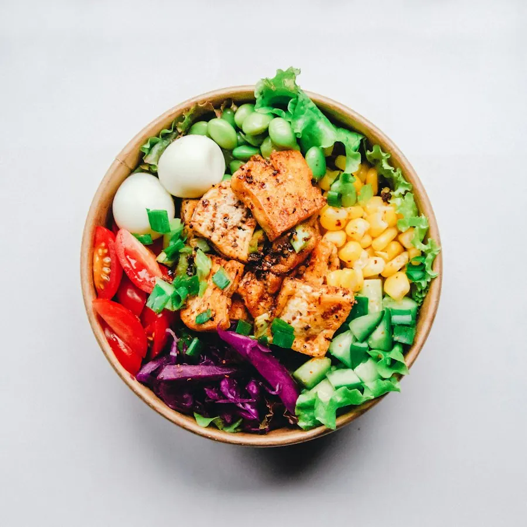

Informasi Lebih Teratur
Katalog produk, daftar harga, dan profil usaha tersusun rapi dalam satu alamat website resmi tanpa tenggelam oleh postingan baru.
Tingkatkan kredibilitas usaha, jangkau lebih banyak pelanggan lokal maupun nasional, dan permudah transaksi langsung lewat WhatsApp.
Tanpa ribet, langsung aktif, dan dibimbing dari awal sampai online.
Banyak UMKM kehilangan potensi pelanggan karena informasi produk yang tercecer di media sosial dan sulit dicari melalui mesin pencari.
Katalog produk, daftar harga, dan profil usaha tersusun rapi dalam satu alamat website resmi tanpa tenggelam oleh postingan baru.
Website dirancang agar nyaman dibuka lewat smartphone, tablet, maupun komputer calon pembeli.
Bangun citra brand yang lebih rapi dan meyakinkan saat calon pelanggan mencari informasi tentang usaha Anda.
Setiap fitur dirancang untuk membantu calon pelanggan mengenal produk dan menghubungi Anda.
Ceritakan kisah usaha, visi, dan keunggulan produk Anda secara menarik.
Daftar produk atau jasa lengkap dengan foto, deskripsi, dan harga.
Pamerkan portofolio pekerjaan atau dokumentasi kegiatan usaha.
Hubungkan pengunjung langsung ke chat WhatsApp Anda hanya dengan satu klik.
Pilih demo yang sesuai dengan kategori bisnis Anda. Semua kartu di bawah adalah ilustrasi konsep, bukan portofolio klien.

CONTOH DEMOWebsite khusus kuliner dengan daftar menu, jam operasional, dan tombol pemesanan cepat via WhatsApp.
Gunakan Model IniCocok untuk penyedia jasa, konsultan, kontraktor, atau freelancer yang ingin menampilkan portofolio.
Gunakan Model IniEtalase digital untuk toko pakaian, aksesoris, atau produk fisik dengan galeri produk menarik.
Gunakan Model IniProses pembuatan website yang transparan dan mudah dipahami, bahkan bagi pemula dunia digital.
Diskusikan jenis usaha dan fitur yang Anda inginkan melalui WhatsApp.
Siapkan struktur halaman, desain tata letak, dan materi yang dibutuhkan.
Website dibangun dengan memperhatikan tampilan dan kemudahan penggunaan.
Tinjau hasil akhir dan sepakati revisi sebelum website dipublikasikan.
Temukan jawaban seputar layanan pembuatan website kami.
Konsultasikan kebutuhan usaha Anda. Kita bahas tujuan, fitur, dan cakupan pekerjaan sebelum mulai.
Mulai Konsultasi